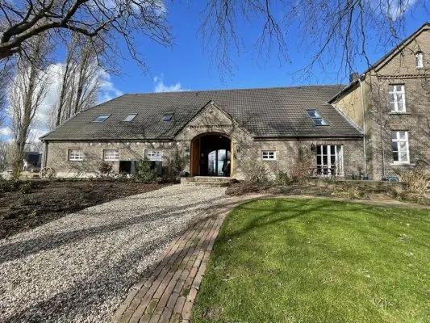
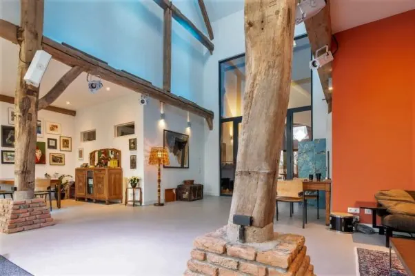
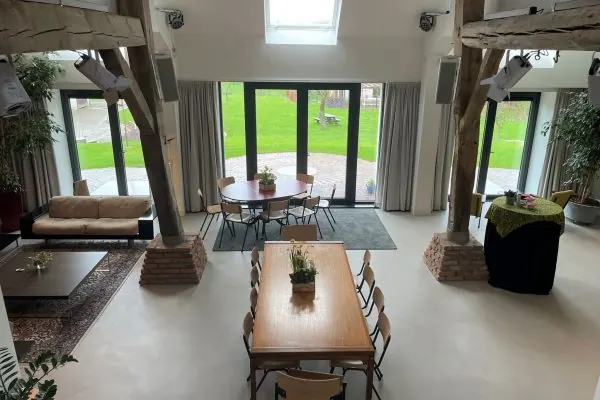
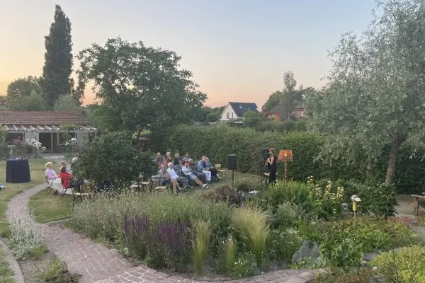

Podium
De Brauerij

De Brauerij
Op zoek naar een unieke locatie voor culturele evenementen, zakelijke bijeenkomsten of speciale gelegenheden in de buurt van Nijmegen? Ontdek De Brauerij, gelegen in het hart van Niel, Kranenburg. Deze bijzondere plek biedt een mix van culturele rijkdom en moderne faciliteiten, gehuisvest in een monumentale boerderij daterend uit circa 1900. Met een idyllische ligging op een terp en tegenover de St. Bonifatiuskerk, bieden ze een sfeervolle ambiance voor een breed scala aan evenementen.

Over De Brauerij
De Brauerij is meer dan alleen een locatie; het is een culturele ontmoetingsplaats waar geschiedenis en moderniteit samenkomen. Deze monumentale boerderij biedt een centrale ruimte van circa 80 m2, perfect voor zowel intieme bijeenkomsten als grotere evenementen, met een capaciteit tot 50 bezoekers. De locatie is uitgerust met hoogwaardige technische faciliteiten zoals een geluidsinstallatie, theaterlicht en een tv/presentatiescherm, naast Wifi en vaste netwerkaansluitingen om aan al uw behoeften te voldoen.
Concerten en Cultuurprogramma
De Brauerij is een broeinest voor cultuurliefhebbers, met een regelmatige programmering van kleinschalige voorstellingen en activiteiten. Van intieme mini-concerten die variëren van singer/songwriter tot wereldmuziek, tot lezingen en theatervoorstellingen, er is altijd iets te beleven. Met een podiumafmeting van 3 x 2 meter, uitgerust met een uitstekende geluidsinstallatie en theaterlichtvoorzieningen, is De Brauerij de perfecte plek om te genieten van semi-akoestische muziek van zowel lokale als internationale artiesten.


Zaalhuur en Tarieven
De Brauerij biedt flexibele zaalhuur mogelijkheden voor diverse evenementen. Voor een vast bedrag per persoon ontvangt u naast deze unieke locatie ook onbeperkt Beukenhorst koffie, thee en (bruis)water en een geweldige lunch. Andere dranken en optionele technische faciliteiten zijn op aanvraag beschikbaar, en wensen zoals geen lunch zijn altijd bespreekbaar. Of het nu gaat om een zakelijke bijeenkomst, een cultureel evenement of een persoonlijke viering, Ze bieden een op maat gemaakte ervaring voor elk evenement.
De Brauerij in Kranenburg: Een culturele oase waar verleden en heden samenkomen, slechts een korte reis vanuit Nijmegen. Ontdek de perfecte setting voor uw volgende evenement of geniet van ons diverse cultuurprogramma. Bezoek ze, waar elk bezoek een unieke ervaring is.

Evenementen op deze locatie
[add_eventon event_location="1928,"]
Contact en openingstijden
- AdresMehrer Straße 1, 47559 Kranenburg Kaart
- Openingstijden
maandag 00:00–24:00 dinsdag 00:00–24:00 woensdag 00:00–24:00 donderdag 00:00–24:00 vrijdag 00:00–24:00 zaterdag 00:00–24:00 zondag 00:00–24:00 - Goed om te wetenparticulierenzakelijke klanten
- Contactdebrauerij.nl
06-13 90 98 91
info@debrauerij.nl
Instagram · Facebook - ReviewsBekijk de reviews op Google Maps
Agenda
 UitgelichtMagda Novels bij de Brauerij8 nov, 15.00 uurDe Brauerij Kranenburg
22nov
UitgelichtMagda Novels bij de Brauerij8 nov, 15.00 uurDe Brauerij Kranenburg
22nov UitgelichtHilde Vos Trio22 nov, 15.00 uurDe Brauerij Kranenburg
6dec
UitgelichtHilde Vos Trio22 nov, 15.00 uurDe Brauerij Kranenburg
6dec UitgelichtLotte Walda bij de Brauerij6 dec, 15.00 uurDe Brauerij Kranenburg
13dec
UitgelichtLotte Walda bij de Brauerij6 dec, 15.00 uurDe Brauerij Kranenburg
13dec UitgelichtGuy Verlinde bij de Brauerij13 dec, 15.00 uurDe Brauerij Kranenburg
10jan
UitgelichtGuy Verlinde bij de Brauerij13 dec, 15.00 uurDe Brauerij Kranenburg
10jan UitgelichtJeroen Kramer bij de Brauerij10 jan, 15.00 uurDe Brauerij Kranenburg
UitgelichtJeroen Kramer bij de Brauerij10 jan, 15.00 uurDe Brauerij Kranenburg
Organiseer je zelf iets? Meld je evenement aan.
In het nieuws
Hier vind je De Brauerij
Kaart: © OpenStreetMap-bijdragers